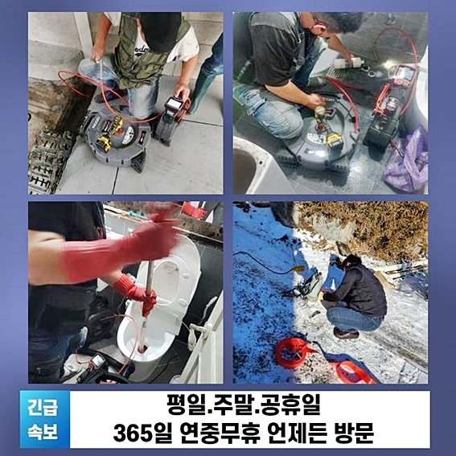
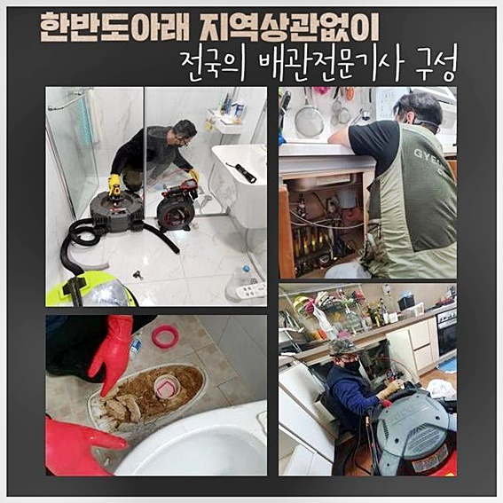
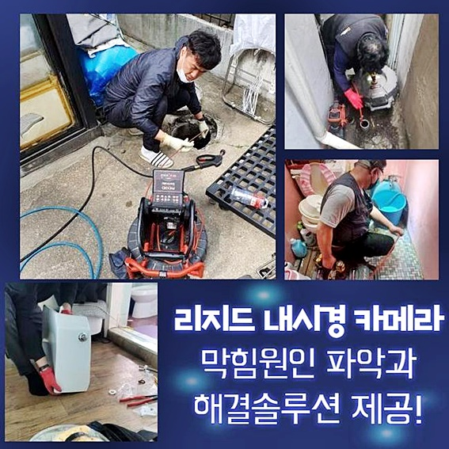
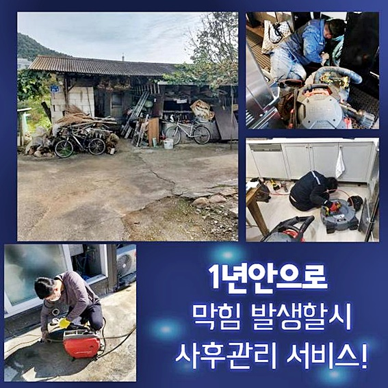
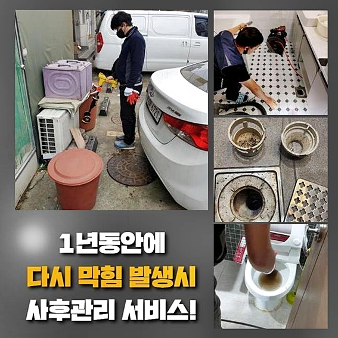

🏠 오산동욕실막힘 맨홀역류 물샘전문업체
오산시 가수동 배관막힘 전문 시공 후기

📋 작업 개요
- 위치: 오산시 가수동
- 서비스 유형: 배관막힘, 고압세척, 내시경점검
- 작업 일시:
- 업체명: 하수구수사대 (010-5615-2118)
🔍 문제 상황
오산동욕실막힘 맨홀역류 물샘전문업체
예기치못하게 APT에 사시는 의뢰자가 싱크대쪽이 막혀 점검들을 바라셨어요
주방의 경우 세척이나 요리를 하시다가 음식물쓰레기나 기름들이 바닥하수관으로 흘러가는 경우가 종종 발생되는데요
깊은 곳에서 이물들이 켜켜히 자리잡으며 배수를 정체시키죠
주기성을 갖추고 점검해주며 세척을 진행하는게 중요하겠으나 신경써서 이해하는게 쉽지않아 증세가 생겼났을 경우 조속히 전문진에게 도움을 청해 해결해보시는 것이 좋답니다
고객님댁에 내방하여 내시경기기를 사용해 하수관의 컨디션을 진단해요
이곳처럼 막히는 증상이 생기게 되었을 시 내부는 하수들이 넘실거릴 여지가 높은데요
예측한것처럼 초입라인에서 고이게되어 확실한 잔해의 양까지 관찰하기엔 어려움들이 존재했습니다
그렇기때문에 초입부분에 하수를 없애준 뒤 배수구를 내시경기기를 가용시켜 살펴보았습니다
육안으로 보이는 곳부터 하수들이나 부유물을 속전속결로 세척해주고자 할때에는 석션만큼 효과를 톡톡히 보는것도 없어요
흡입능력을 발휘해서 오수들을 흡입시켜 제거시킵니다

🔎 원인 분석
💡 전문가 진단: 정밀 진단 장비를 사용하여 슬러지의 고착 여부를 판명하고 타격/세척 작업을 실시했습니다.
그러나 고착되었다거나 군데군데 붙어버린 기름까지 청소하는데엔 적합하지 않기에 샤프트기기와 운용해줄땐 효과가 크게 나타나요
우선 초입부분에 존재하는 잔해물을 청소하기위한 심산으로 석션장비들을 사용해서 흡입하고 하수관을 내시경카메라의 진단에 몰두해보았죠
내시경장치의 라인들을 하수관의 안까지 투입해 확인하니 대량의 기름류들이 존재했어요
일상을 영위하시면서 싱크대쪽을 쓰시면서 조리도구나 기름들이 낀 접시를 세척해줄때 기름때를 구석구석 제거하고 설거지까지 수행하는 경우들이 거의 없죠
기름류들이 제거되지 않은 접시를 세척해주며 기름들이 배수통 너머의 배수관에 여과없이 들어갑니다
향후 내부에서 응고되면서 딱딱한 이물로 변하는데요
기름이라 함은 온도가 높을땐 녹겠으나 장기간 지속되어 단단해진 것들은 온수들도 해결효과들은 미미해요
위와같은 상황으로 인해 막혀버린 증세를 해결하고자 수행되어야 되는것이 샤프트장치를 쓴 세척입니다
장치의 머리부의 사슬들이 배수관을 지나가며 회전을 통하여 이물들을 없애는데요
이러한 절차들을 계속하면 벽면에 존재하는 기름슬러지들과 오염원이 떨어져나가는데요
유사하게 샤프트기의 장비는 내시경기기와 비슷하게 라인형상으로 구성된 모습입니다

🔧 작업 과정
그리하여 샤프트기기의 장비와 내시경장비의 선이 한번에 진입될 수 있어요
배수관을 여기저기 주시해보면서 막혀버린 증세를 해결하기에 효과적인 청소들이 가능한것이죠
막히는 증상이 생겨나는 까닭은 많지만 그 가운데 기름류들이 집수정으로 배출되는 자리까지 막아버리면서 문제되는 현상이 때때로 생겨요
이만큼 슬러지들이 증상이 된다는 것을 반증하는데 축적되는 이물들을 사용습관들을 개선시켜 현저하게 떨어뜨리는건 아니에요
그러므로 일상 중 씽크대를 쓰는 중에 기름성분은 최대한 제거시키고 식기류 청소를 진행시키는것이 좋습니다
그리고 자주 하수관에 온수들을 부으면서 기름들이 관로 속에서 축적될 수 없게 관리하면 막히는 사태를 회피하시는데에 큰 도움이 되요
지속하여 샤프트기의 작업을 이어가면 막히는 문제를 불러 일으키던 기름슬러지들과 잔해들이 깨끗하게 청소된걸 확인했습니다
작업 후엔 작업된 모습을 내시경장치를 통하여 군데군데 확인되기에 의뢰자로 하여금 안심됩니다
추후에 막혀버리는 증세가 생길 수 없도록 관리방법들과 주의사항도 설명드리고 있기에 다시 증세가 재발될 수 없게 사용자가 신경쓰셔서 관리하는 게 좋답니다
고객의 요청으로 S모양의 트랩들도 세심하게 결합시켰어요
트랩의 기능이라 함은 이물이 하수관으로 곧이 곧대로 가지않게 방어하는 기능을 하고 빠른 통수를 경험하고자 대개 설치하는 배수 관련 용품이에요
그러나 트랩연결부에 이물이 침전되었을 경우 막히는 현상이 재발할 여지가 있으므로 주기성을 갖추고 청소들을 진행시키며 관리하는게 좋다고 안내했는데요
트랩 교체가 일단락되면 주름관로와 배수관에 틈들이 생겨나지 않도록 접착해주었어요
연결된 부위에서 균열들이 생긴다면 악취가 내부로 침투해 피해가 많이 생겨나죠
그러하기에 최대한 빈틈없게 마감해주었어요
이번 고객님댁에서 배출된 잔해의 형태입니다
예상보다 상당량의 이물이 관로 속에서 쌓여있던 형상이였기에 작업기간도 염두에 둔 것보다는 늘어났어요
그럼에도 불구하고 오래도록 걸리더라도 원인들을 풀어갈 수 있게 불철주야 노력을 거듭해요


✅ 작업 완료
물들이 빨리 배출되는 모습도 고객분과 체크해보고 저희전문가는 뒷정리를 하고 돌아갔습니다
싱크대쪽이 막힐 경우 까닭은 주로 깊은 곳에서 잔해물이나 기름들이 축적된 경우입니다
허나 설비의 형태나 하수도의 상태에 그러하기에 달라질 수 있어서 전문가들에게 연락하여 해결을 받아보고 대응하는게 안전한 방법입니다
제대로 된 해결들이 필요할 경우 아무때나 연락주세요!
의뢰자가 계신 장소로 조속히 가도록 할게요!


⚠️ 하수구 배관 막힘 예방 및 관리 가이드
- ✅ 머리카락, 비닐, 물티슈 등 물에 분해되지 않는 이물질은 절대 흘려보내지 마세요.
- ✅ 기름기 많은 식기는 설거지 전 키친타올로 먼저 기름때를 닦아내세요.
- ✅ 주기적으로 배수구에 뜨거운 물을 가득 부어주어 유지방 고착을 방지하세요.
- ✅ 작업 후 1년 이내 재발 시 무상 A/S 보증 서비스를 제공합니다.
💡 핵심 정리
- 확실한 장비 작업(내시경 점검 및 샤프트 스케일링)으로 원인을 뿌리 뽑습니다.
- 작업 후 1년 이내에 동일한 부위 재발 시 100% 무상 A/S 서비스를 보장합니다.
- 서울 · 경기 · 인천 전 지역에 24시간 언제든 긴급 출동할 수 있도록 항시 대기 중입니다.
❓ 자주 묻는 질문 (FAQ)
🚨 오산시 가수동 배관막힘 문제로 고민이신가요?
정확한 원인 진단과 확실한 시공으로 재발 없는 해결을 약속드립니다.
24시간 긴급 출동 | 서울 · 경기 · 인천 전지역 | 1년 내 재발 시 무상 A/S